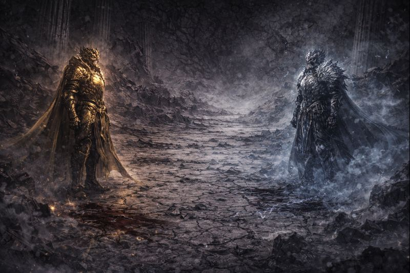
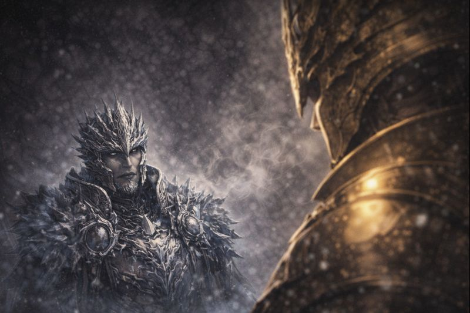
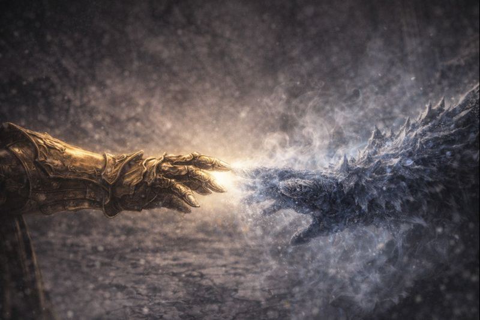
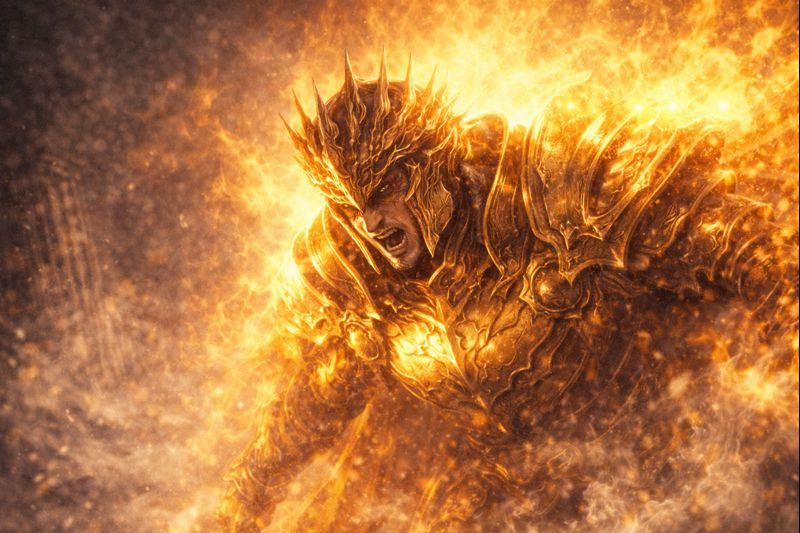
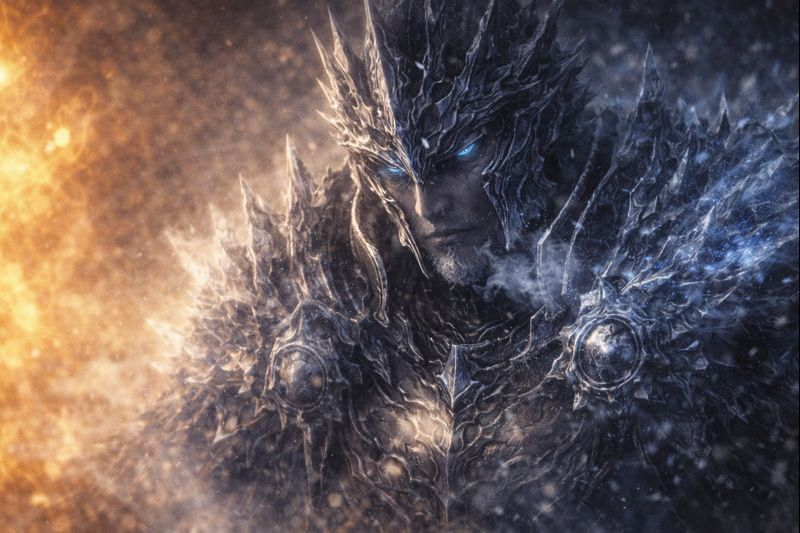
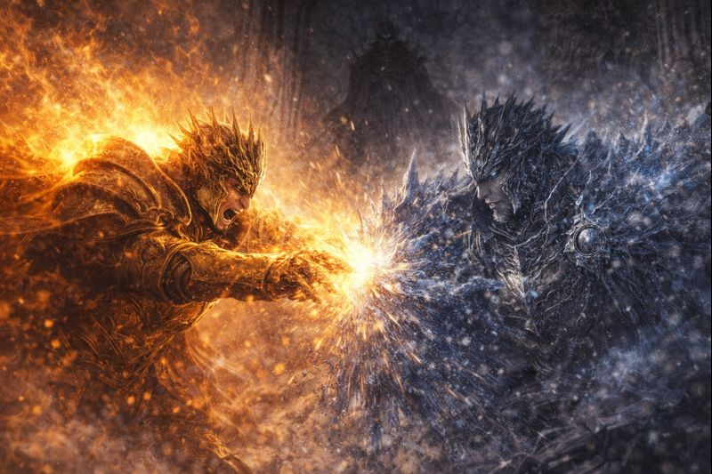
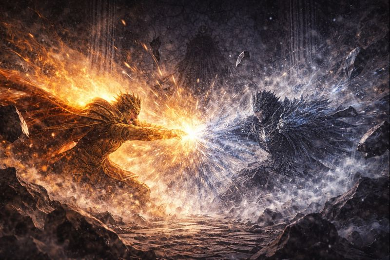
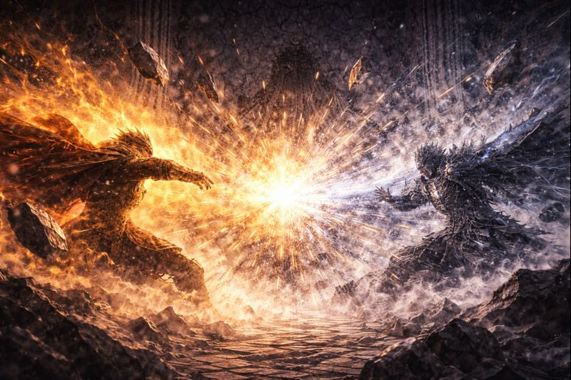
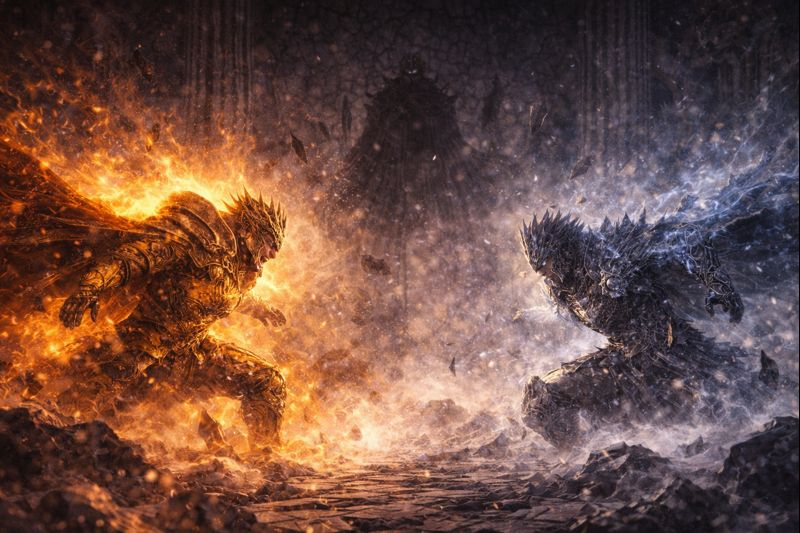
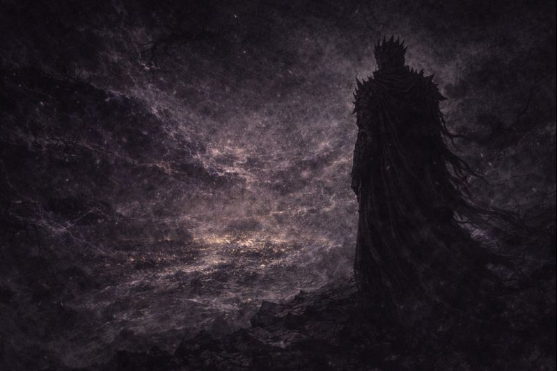

CHAPTER 7
Aelius and Glacius

The chamber did not darken.
It cooled.
Cold arrived without force,
without warning —
the way inevitability always does.
King Aelius felt his light dim
before it was challenged.

King Glacius did not advance.
He did not need to.
Frost spread across stone and air,
answering his presence alone.
“You shine,” he said calmly,
“because you fear being unseen.”

Aelius straightened at the words.
His radiance gathered — restrained,
but proud.
“The world survives because it is illuminated,”
he answered.
“Because something refuses
to let darkness settle.”

Light pressed forward slowly,
warming stone, cracking frost.
Aelius did not rush.
He did not shout.
“I will not dim myself,” he said,
“to make others comfortable.”

The cold answered without anger.
Frost thickened.
Light slowed.
“And I will not melt,” Glacius replied,
“just to prove that I exist.”
Ice does not argue.
It endures.

Light strained to expand.
Cold refused to retreat.
Neither escalated.
Neither yielded.
Pressure mounted —
not outward,
but inward.

The pressure did not break the ice.
It broke something else.
Aelius felt it then —
not resistance,
not opposition —
but indifference.
“You don’t fight me,” he said slowly.
“You were never trying to win.”

Glacius did not move.
The frost did not retreat.
“Victory is unnecessary,” he replied.
“The world does not need to be convinced.”
“It only needs to last.”
“You burn because you need to be seen.”

The light did not fade.
It recoiled.
Aelius turned away —
not in defeat,
but in understanding he never wanted.
Behind him, the cold remained.
Patient.

From the edge of the fracture,
another presence observed.
They fracture themselves,
he thought quietly.
Not through weakness —
but through certainty.
Good.
Let the light doubt.
Let the cold wait.
The throne does not belong to those who endure.
It belongs to the one who remains
when all others are finished.
✦ ✦ ✦